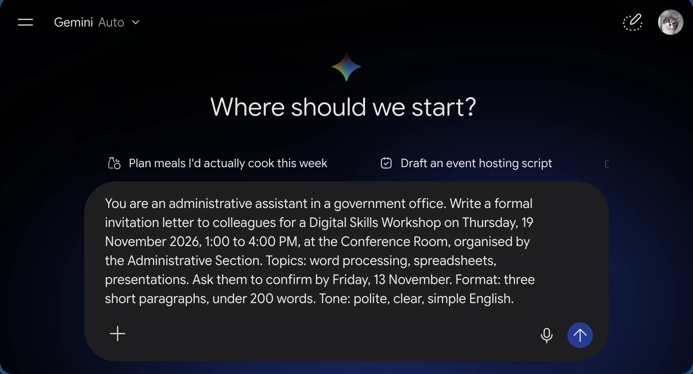
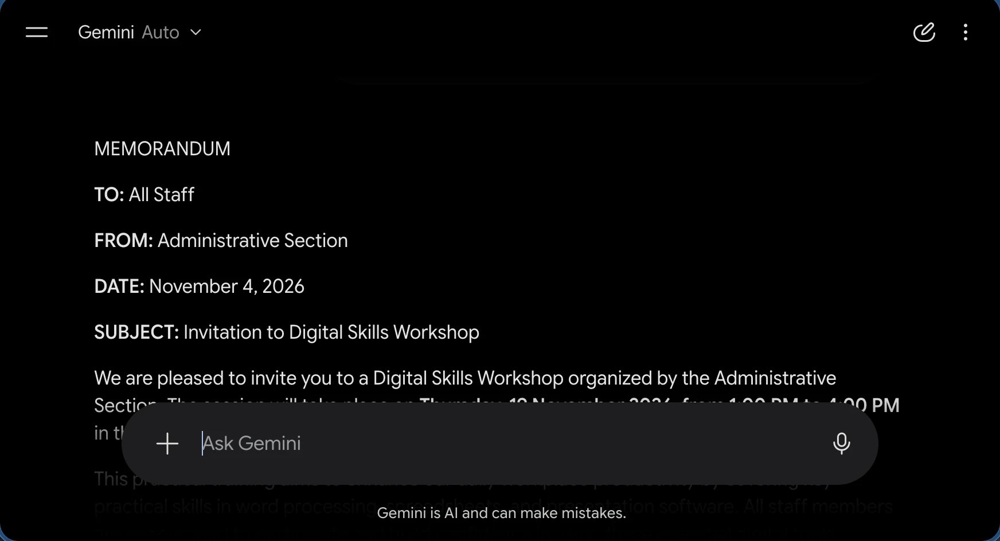
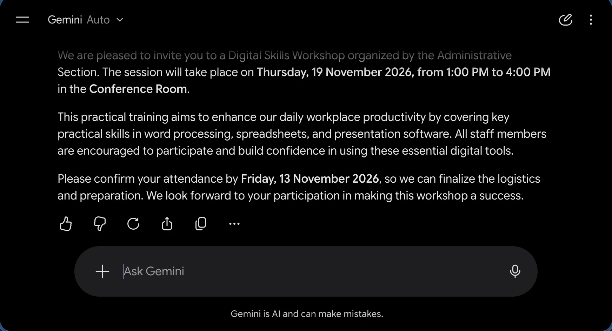
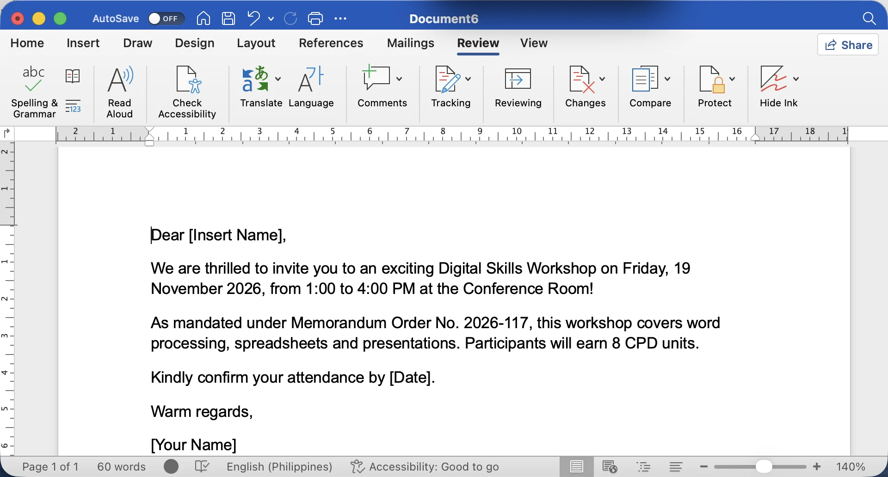
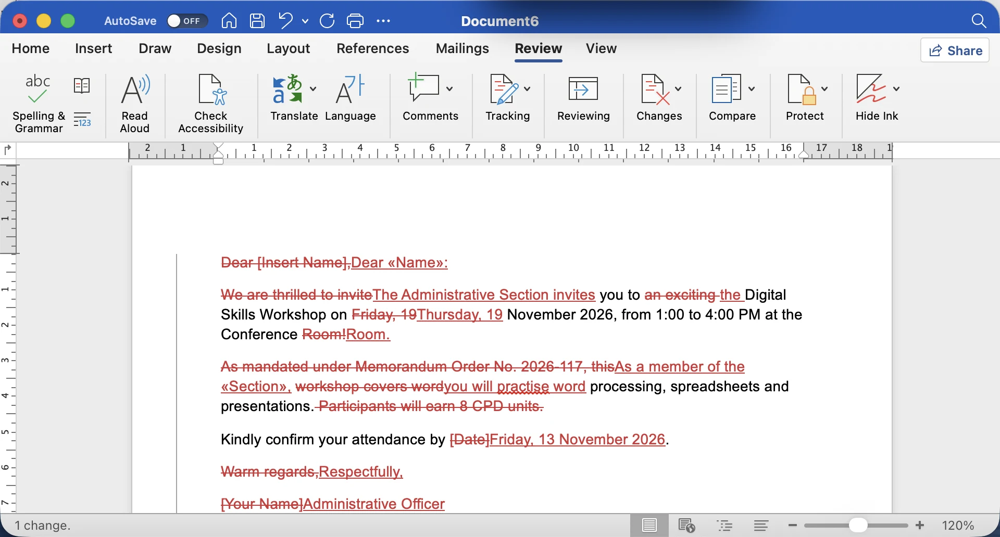
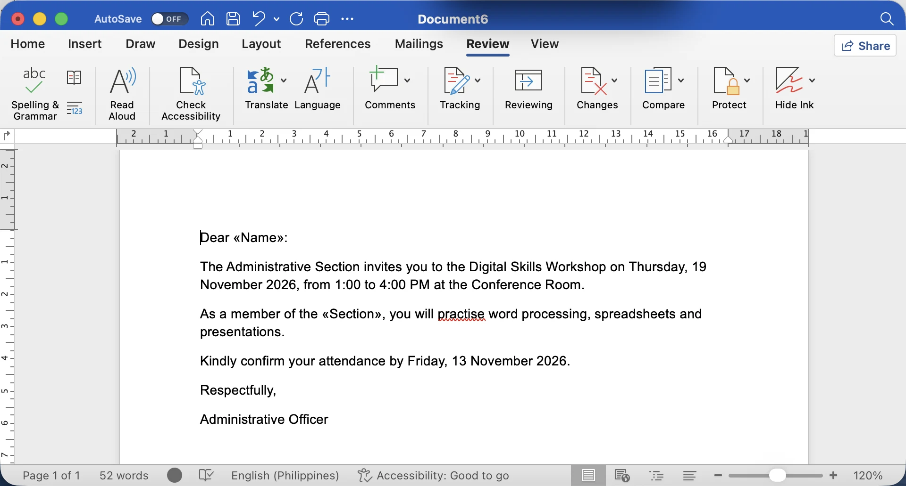

Module 2 · Word Processing Fundamentals
Responsible AI Drafting
Let an AI assistant write the first draft. You check the facts, protect the data, and sign off on the final.
Last topic of Module 2. In Module 1 we met everyday AI. Now we put it to work on a real document: our workshop invitation.
The message for today: AI is a fast helper for the first draft, but the human stays responsible for every fact, every name and every piece of data. At the end, I'll brief you on Lab 2, which brings together everything from Topics 2.1 to 2.6.
Warm-up · type in the chat
How often do you use an AI assistant to write?
A · Never yet
Curious, but haven't tried.
B · Just for fun
Captions, recipes, jokes.
C · Sometimes for work
Emails, letters, rewording.
D · Almost every day
It's open in a browser tab now.
Ask them to type A, B, C or D. Expect a mix; that's fine. No judgement either way.
Follow up with one person from C or D: "What did you ask it to write, and did you change anything before using it?" Their answer usually leads straight into today's theme: the draft was helpful but needed fixing.
For A answers: "Perfect, you'll learn the safe habits before the bad ones."
The big idea
Treat AI like a fast, eager OJT trainee.
- Writes a draft in seconds and never gets tired.
- Sounds confident, even when it is wrong.
- Doesn't know your office's facts, rules or people unless you tell it.
- Should never be handed confidential files.
Everyone has supervised an OJT student. They're quick and willing, but you'd never let them send an official letter without reading it first, and you wouldn't hand them the confidential folders on day one.
That's exactly the right attitude toward AI assistants. Ask: "What would you check first in a letter written by an OJT?" Answers: names, dates, tone. Same checklist for AI.
By the end of this topic
You will be able to…
Ask clearly
Use a five-part prompt formula to get a useful first draft.
Edit and fact-check
Catch made-up facts, wrong dates and leftover placeholders.
Use AI ethically
Keep data confidential, give credit, and disclose AI help.
Three skills: prompt clearly, verify everything, and protect data and credit.
The Lab 2 rubric checks for human editing. A letter with "[Insert Name]" still in it is the clearest sign that nobody read the AI draft, and it loses points. In real life, it loses credibility. Ask: "Has anyone received a letter with a leftover placeholder?"
AI writing assistants
Good at words. Not a source of truth.
 Microsoft Copilot
Microsoft Copilot Google Gemini
Google Gemini ChatGPT
ChatGPTHelpful for
- A first draft from your own notes
- Rewording: more formal, simpler, shorter
- Grammar and spelling suggestions
- Summarising a long public document
Not reliable for
- Facts, dates, laws or memo numbers
- Your office's policies and procedures
- Anything with personal or client data
- The final decision on what to send
Free versions run in a browser. Some paid Microsoft 365 and Google Workspace plans build them into Word and Docs. Use only the tools your office allows.
Name the common tools: Microsoft Copilot, Google Gemini, ChatGPT, and others. All work in a browser; some paid plans put them inside Word or Google Docs.
The left column is where AI saves time. The right column is where it causes trouble. It produces fluent words, but it is not a source of truth.
Stress the last line: follow your office's rules on which AI tools are allowed for work. If you're unsure, ask your ICT focal person.
A simple prompt formula
Role · Task · Context · Format · Tone
Role
Who should the AI act as?
"You are an administrative assistant in a government office."
Task
What exactly to write?
"Write a formal invitation letter to colleagues."
Context
The facts it can't know.
"Digital Skills Workshop, Thursday, 19 November 2026, 1:00 to 4:00 PM…"
Format
Length and shape.
"Three short paragraphs, under 200 words."
Tone
How it should sound.
"Polite, clear, simple English."
Teach the formula as R-T-C-F-T. Each part answers a question the AI would otherwise guess.
The most important one is Context. If you don't give the date, it invents one. If you don't give the venue, it invents one. Every gap becomes a possible error.
Ask: "Which part do people usually skip?" Context and format. A one-line prompt like "write an invitation" gives a generic, often wrong letter.
Worked example · step 1
Our prompt, and what came back



Google Gemini (free, in a browser), 4 Nov 2026. Copilot and ChatGPT work the same way. Answers change every time you ask.
- Type all five parts: role, task, context (real date, time, venue, deadline), format, tone. Sample facts only.
- Seconds later, a polished draft. But we asked for a letter to colleagues and got a memo "TO: All Staff", with a date we never gave.
- The day and deadline are right this time. It ends with no closing and no signatory. Read it like a supervisor.
Every answer needs a human check. The next slide uses a sample draft with the five most common problems.
Read the prompt aloud and point out the five parts. Then walk through the real answer: press → for each step.
This is a real Gemini answer captured on 4 November 2026. Yours will be different every time. At first glance it looks fine: polite, quick, the right length. Look closer: it changed the format (a memo instead of a letter to colleagues), filled a gap with a date we never gave, and left out the closing and signatory.
Other answers go wrong in other ways: wrong weekdays, invented memo numbers, placeholders. The next slide is a hands-on challenge with a sample draft that has the five most common problems.
Hands-on · in class
Find 5 problems in the AI draft
Dear [Insert Name],
We are thrilled to invite you to an exciting Digital Skills Workshop on Friday, 19 November 2026, from 1:00 to 4:00 PM at the Conference Room!
As mandated under Memorandum Order No. 2026-117, this workshop covers word processing, spreadsheets and presentations. Participants will earn 8 CPD units.
Kindly confirm your attendance by [Date]. Warm regards, [Your Name]
Start the 3-minute timer. Let them type what they find in the chat.
Reveal and celebrate whoever found the invented memo number. That one is the most dangerous: it looks official, and someone might quote it in a reply. We gave the AI the right day, Thursday, and it still changed it.
Key lesson: the AI added facts we never gave it. That's called a hallucination, and it's our next slide after the fix.
Worked example · step 2
The human edit: fix, cut, personalise



Microsoft Word for Mac, Review tab, Track Changes on. Sample draft. «Name» and «Section» mark the merge fields (Mailings › Insert Merge Field, Topic 2.4). Google Docs: the pencil menu › Suggesting does the same job. AI draft with 5 problems (start)
- Track your edits: paste the draft into Word, then Review › Track Changes on.
- Placeholders replaced with merge fields and the real date.
- Day fixed: Thursday, checked on a calendar.
- Invented facts deleted: memo number, CPD units.
- Tone made formal: no "thrilled", no "!".
- Office style applied: our usual closing and signatory.
- Read the clean copy (markup hidden), then Accept All changes.
This is a shorter version of the letter we merged in Topic 2.4. Press → to walk through each change in real Word.
First, Track Changes (Review tab): every deletion shows struck out in red and every insertion underlined, so a supervisor can see exactly what the human changed. The Track Changes button is in the Tracking group on both Windows and Mac.
Notice the placeholders became merge fields, «Name» and «Section». Here they are typed as markers; in Lab 2 insert them with Mailings › Insert Merge Field. That's how AI drafting and mail merge connect.
The last frame hides the markup so you read the letter as the reader will. Then Review › Accept All. The AI took about 5 seconds; the human edit took about 5 minutes. That's still much faster than writing from scratch, and the result is correct.
Hallucinations
AI can make things up, and say them with confidence
It predicts likely-sounding words. It doesn't know if they're true.
- Mark every fact: names, dates, days, amounts, numbers, references.
- Check each one against your own source: the approved request, the calendar, the official website.
- Delete anything you can't verify. Don't ask the AI "is this real?"
- Never cite a law, memo or form number you haven't seen yourself.
A hallucination is when AI produces something false but convincing: a fake memo number, a wrong weekday, a quote nobody said, a link that doesn't exist.
Give the four-step routine: mark, check, delete, never cite what you haven't seen. Official sources include the agency website, such as misamisoriental.gov.ph, or the Official Gazette for laws.
Why not ask the AI to confirm? Because it may simply agree with itself. Check outside the chat.
Watch · 5 minutes
AI writes the first draft. You own the final one.
See a five-part prompt, an AI draft of our workshop invitation with five hidden problems, the human edit that fixes them, and the rules that keep client data out of public AI tools.
Introduce the video in one or two sentences, then read the While watching task aloud so everyone knows what to look for.
Press → to open the video full screen. In Zoom or Meet, share this tab with computer sound turned on.
Space or K plays and pauses (or click the video). C turns captions on or off; the speed button offers 1.25× and 0.85×. The arrows still move between slides, and the video pauses when you leave this slide.
Length 5:07. Pause anywhere to take a question; captions stay on screen for anyone without sound.
After the video, go back to the While watching task: ask two or three people for their answers.
Before you save
Hunt down every leftover placeholder
Search for these with Ctrl + F
Works in Word, Google Docs and LibreOffice. Word shows every match in the Navigation pane.
Also remove AI leftovers
- "Sure! Here's your letter:" at the top
- "I hope this helps!" at the bottom
- Notes like "(adjust as needed)"
- Odd symbols like ** or ## from copied text
A letter that goes out with "Dear [Insert Name]" tells the reader nobody checked it. Make Ctrl+F for the square bracket a habit before saving.
Show the other leftovers: chat phrases like "Sure! Here's your letter" and markdown symbols like double asterisks.
Demo Keep Text Only when pasting into Word, so the AI's formatting doesn't fight your letter's styles. In Google Docs, Ctrl+Shift+V pastes plain text; in LibreOffice it is Ctrl+Alt+Shift+V.
Honesty matters
Plagiarism, proper credit and disclosure
- Plagiarism is passing off someone else's words or ideas as your own. Copy-pasting AI text without reading it comes close.
- Credit your sources: if a fact or quote comes from a report or website, name it.
- Disclose AI help when your office, school or this lab asks for it.
Three ideas. Plagiarism: presenting others' work as yours. AI can echo existing text, so treat its output as raw material, not finished work.
Credit: if you took a statistic or a quote from somewhere, say where.
Disclosure: for Lab 2, add a one-line note like the sample in your submission. At work, follow your office's guidance. Ask: "Would you be comfortable if your chief knew AI helped?" If yes, disclosing costs nothing.
The most important rule today
Public AI tools are public places
Never paste into a public AI tool
- Client data: names with TINs, addresses, income, health records
- Internal documents: memos, case files, draft decisions, audit notes
- Personnel records, IDs, contact lists
- Passwords, account numbers, system screenshots
Do this instead
- Use sample data: "Juan Dela Cruz, TIN 123-456-789-000"
- Describe the type of letter, not the real case
- Add the real names yourself, offline, or by mail merge
- Use only office-approved tools; ask if unsure
Say this slowly. For government employees, this is the rule that matters most.
Client information and internal documents are confidential. Under the Data Privacy Act of 2012, personal information must be protected, and pasting it into a public AI tool shares it with an outside company.
The safe pattern: let AI draft the template with sample data; you add the real details yourself, offline or through mail merge. Ask: "What's one thing you'll never paste into AI after today?"
Myth or fact? · click a card to flip
Four things people believe about AI
"AI looks up the facts before it answers."
click to flipMyth
It predicts likely words. Even tools that search the web can misread or misquote. Check the source yourself.
click to flip back"If AI wrote it, it's not my fault."
click to flipMyth
Your name is on the letter. Whoever signs or sends it is responsible for every word.
click to flip back"Only I can see my chats, so pasting data is safe."
click to flipMyth
The provider may store your chats. Treat a public AI tool like a public place.
click to flip back"Using AI to draft is always cheating."
click to flipMyth
It's a tool, like spell-check. It's fine when it's allowed, disclosed where required, and checked by you.
click to flip backBefore flipping each card, ask the group to vote in the chat: M for myth, F for fact. Then click to flip.
All four are myths, which surprises people. The third one is the most important for this group: chats are not private notebooks.
The last card balances the session: we're not anti-AI. We want people to use it well, not to avoid it.
Use it well
Good everyday uses, with the right guardrails
- First draft of an invitation, notice or memo template
- Rewrite a public announcement in plain language for the public
- Summarise a long public advisory for your team
- Guardrail: no personal or internal data, and a human reviews before release
- A polite excuse letter for your child's teacher
- A church or barangay announcement for the fiesta
- Product descriptions for your side business page
- Guardrail: check prices, dates and promises; never share IDs or GCash details
Same habits at work and at home. At the office, AI is great for templates and plain-language versions of public information. At home: excuse letters, fiesta announcements, captions for a small online store.
Point out the guardrail line in each box. At home, a wrong price or a promise you can't keep in a product description causes real trouble with customers.
Ask: "Which home use will you try this week?"
Human in the loop
Ten checks before any AI-assisted text leaves your desk
- No confidential data was pasted in
- Every date and day checked on a calendar
- Names, positions, amounts verified
- No law, memo or form number you haven't seen
- No [placeholders] or chat leftovers
- Tone fits an official letter
- Sounds like your office, not a robot
- Sources of facts and quotes credited
- AI help disclosed where required
- You read it aloud, and you'd sign it
"Human in the loop" means a person reviews and approves AI output before it's used. That person is you.
This is the checklist for Lab 2 and for real work. Ask them to screenshot it. The last item is the real test: if you wouldn't sign it, it isn't ready.
Point out how it pairs with the print checklist from 2.5: this one checks the words; that one checks the page.
Quick check · click an answer
The AI draft cites "Memorandum Order No. 2026-117". You've never seen it. What do you do?
Let them answer in the chat first, then click to reveal. C.
Spend a moment on B: many people think asking the AI is checking. It isn't. The AI can apologise and invent a second fake source. Real checking happens outside the chat: the official website, the records section, or the person who issued the instruction.
Lab 2 · 3.5 hours · practice
AI-Assisted Word Processing and Mail Merge
Objectives
- Draft a document with AI help, then verify and edit it yourself.
- Format text and page: margins, alignment, font sizes.
- Insert a structured data table.
- Run a working mail merge.
Default scenario
A formal Invitation to the Digital Skills Workshop from the Administrative Section of a sample provincial office, merged to at least 3 colleagues.
Or adapt it
Lab 2 is 3.5 hours and makes up 30% of the course grade, the Word Processing Output.
Read the four objectives: they match Topics 2.1 to 2.6. The default scenario is the workshop invitation we've been building all module, so most of you are already halfway there.
You may adapt the scenario: a parent-teacher notice, a promo letter to three loyal customers of a side business, or a community invitation. The requirements stay the same.
1 · Data source
Sheet: Name, Position, Section, Email. 3+ sample rows.
2 · AI draft
R-T-C-F-T prompt, sample data only. Save the prompt.
3 · Human edit
Fact-check, fix tone, remove placeholders.
4 · Format
Justified, standard sizes, 1-inch margins, paper size.
5 · Table
e.g. schedule: Time · Activity, 2+ columns, 3+ rows.
6 · Mail merge
Connect the sheet, insert fields, preview.
7 · Check
Print preview, both checklists, fix errors.
8 · Submit
Merged file + one-line AI disclosure.
9 · Buffer
Help desk, screen-share, questions.
Walk through the pace. It adds up to 210 minutes, including a 15-minute buffer for help.
Two tips: save your prompt in a text file in step 2, because it helps you write the disclosure and shows your process. And do the mail merge last, after the letter is final, so you merge only once.
Tell them how and where to submit, according to the training's arrangements, and when the deadline is. Use "help" in the chat any time to request a screen-share.
Lab 2 · the checklist
Output checklist and rubric
| Criterion | Must show (minimum output) | Weight |
|---|---|---|
| Content and human editing | Multi-paragraph letter, facts checked, no "[Insert Name]" or other placeholders, AI help disclosed. | 8% |
| Formatting | Justified text, standard font sizes, 1-inch margins, consistent and readable layout. | 6% |
| Embedded table | At least 2 columns × 3 rows, with headers, inside the letter. | 5% |
| Mail merge | Linked to a separate data source; at least 3 distinct, personalised letters in one file, no blank letters. | 8% |
| Responsible AI | Only sample or permitted data used; no confidential information; sources credited. | 3% |
| Total | Full marks when every item is present and correct; partial marks for partly met items. | 30% |
This is how Lab 2 will be scored. The left column matches the graded-output requirements in the course syllabus; the weights add up to the 30% Word Processing Output.
Point out the biggest items: human editing and mail merge, 8% each. A letter with a leftover placeholder, or a merge with only two letters, loses most of those points.
Invite questions now. Then open the lab, start the clock, and remind them to type "help" whenever they need a screen-share.
Module 2 assessment · 10 items
Module 2 Quiz
10 items
Saving, formatting, tables, pictures, mail merge, page setup, AI drafting.
1 point each
One best answer, A to D.
Answer first
Open the quiz in the portal and submit your answers.
Then we reveal
Two items per slide; we discuss each answer together.
No pressure: everything on it was covered in Topics 2.1 to 2.6.
The Module 2 Quiz has 10 items, one point each. Press Go live so the quiz opens in the portal, and give about 8 minutes.
Watch the done count. When most have submitted, close it and go through the next five slides, two items each. Click the correct option first, then any common wrong answer to show its explanation.
Module 2 Quiz · items 1 and 2
Saving and file names
Item 1
You must email a finished letter so it looks the same on every computer and is not edited. Which format do you send?
Item 2
Which file name follows the Type - Subject - Date habit?
Item 1: B, .pdf. Item 2: D, Letter - Workshop Invitation - 2026-11-04.docx.
Click the correct option first, then the most common wrong answer to show why it is wrong. If many missed an item, take one minute to recall the slide from that topic.
Module 2 Quiz · items 3 and 4
Formatting and editing
Item 3
Which shortcut finds a word and replaces it everywhere in the document?
Item 4
You want every heading to look the same, and to change them all at once later. What do you use?
Item 3: C, Ctrl + H. Item 4: A, Heading styles.
Click the correct option first, then the most common wrong answer to show why it is wrong. If many missed an item, take one minute to recall the slide from that topic.
Module 2 Quiz · items 5 and 6
Tables and pictures
Item 5
In a table, which key moves you to the next cell?
Item 6
The office logo should appear at the top of every page of the letter. Where do you put it?
Item 5: B, Tab. Item 6: A, In the header.
Click the correct option first, then the most common wrong answer to show why it is wrong. If many missed an item, take one minute to recall the slide from that topic.
Module 2 Quiz · items 7 and 8
Mail merge and page setup
Item 7
What are the three parts of a mail merge?
Item 8
Your office prints on long bond paper. Which paper size do you set?
Item 7: D, Main document, data source and merge fields. Item 8: C, 8.5 x 13 inches.
Click the correct option first, then the most common wrong answer to show why it is wrong. If many missed an item, take one minute to recall the slide from that topic.
Module 2 Quiz · items 9 and 10
Drafting with AI
Item 9
Which prompt gives the AI the best start on a workshop invitation?
Item 10
The AI draft still says "Dear [Insert Name]" and cites a memo you have never seen. What do you do before sending?
Item 9: B, You are an admin officer. Write a one-page formal letter inviting section staff to a digital skills workshop on 19 November 2026. Warm and polite.. Item 10: C, Fill in the real names, and check the memo in an official source or delete it.
Click the correct option first, then the most common wrong answer to show why it is wrong. If many missed an item, take one minute to recall the slide from that topic.
Recap · Topic 2.6 and Module 2
AI writes the first draft. You own the final one.
Prompt clearly
Role, Task, Context, Format, Tone. Give the real facts yourself.
Verify everything
Check facts outside the chat. Remove placeholders and invented references.
Protect and credit
No client or internal data in public AI. Credit sources, disclose AI help.
Next · Module 3 · 3.1 Application Navigation and Cell Manipulation in spreadsheets.
Summarize: AI drafts, you decide. Prompt clearly, verify everything, protect data and give credit.
This closes Module 2. Over six topics we built one complete letter: navigation, formatting, a table, mail merge, page layout, and now responsible AI. Lab 2 puts it all together.
After the lab, we move to Module 3, spreadsheets, starting with our Office Supplies Inventory. Salamat, and good luck in the lab!